메이커 동아리 · 스터디패드 만들기
1~4 프로그램 준비5~9 설치 · 연결 · 설정10~12 올리고 켜기
12단계
스터디패드를 보드에 올리기
아두이노 IDE 설치부터 업로드, 첫 화면까지 함께 따라 해요
·시작하기
오늘 흐름 · 약 50분
00~08분1~4단계 · 준비물, IDE 설치, 한국어, 화면 구경
08~23분5~6단계 · ESP32 보드와 LovyanGFX 설치
23~33분7~9단계 · 코드 열기, 보드 연결, 도구 설정
33~45분10~11단계 · 확인 → 업로드
45~50분12단계 · 터치 보정, 완성!
ESP32 설치(5단계)가 가장 오래 걸려요. 내려받는 동안 다음 장을 함께 봐요.
·시작하기
낱말 네 개만 먼저
- 아두이노 IDE — 코드를 쓰고 보드에 보내는 프로그램
- 스케치 — 아두이노의 코드 파일. 확장자는
.ino - 컴파일 — 사람이 쓴 코드를 보드가 알아듣는 기계어로 바꾸기
- 업로드 — 바꾼 기계어를 USB 케이블로 보드에 보내 저장하기
1준비물 확인
책상 위에 세 가지
📟
2.8인치 ESP32 터치 보드뒤쪽에 BOOT · RESET 버튼이 있어요🔌
USB-C 케이블데이터가 되는 케이블이어야 해요휴대폰 충전기에 딸려 온 짧은 케이블 중에는 충전만 되는 것이 있어요. 업로드가 안 되면 케이블부터 바꿔 봐요.
학교 컴퓨터에서 설치 비밀번호를 물으면 선생님을 불러요.
2아두이노 IDE 설치
아두이노 IDE 내려받기
주소창에 arduino.cc/en/software → Windows Win 10 and newer, 64 bits → JUST DOWNLOAD (돈을 내지 않아도 돼요)

2아두이노 IDE 설치
설치 창은 이렇게
I Agree → Next → Install → Finish. 드라이버를 묻는 창에는 꼭 설치를 눌러요.

설치 안 함을 누르면 나중에 보드를 못 찾을 수 있어요. 처음 실행 때 알림이 여러 개 뜨면 다 사라질 때까지 1~2분 기다려요.
3메뉴를 한국어로
메뉴를 한국어로
File → Preferences... Ctrl+, → Language: 한국어 → OK
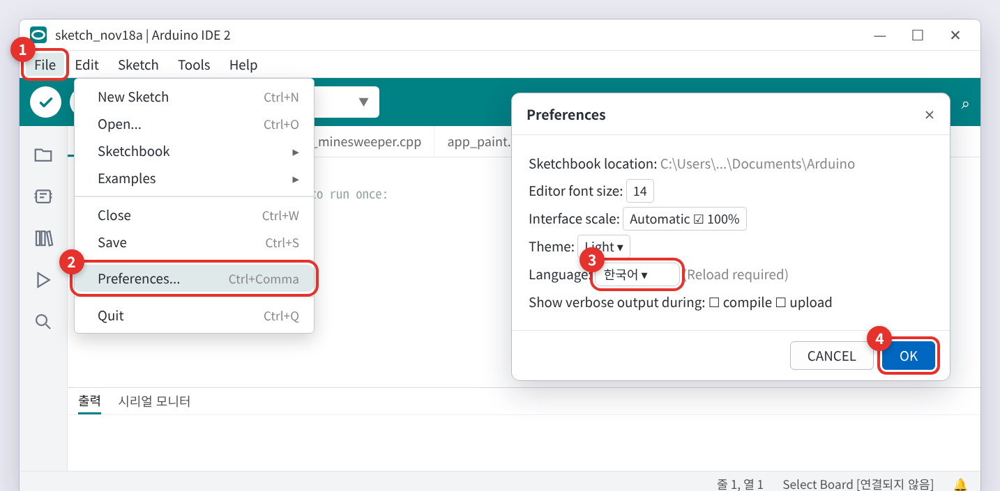
4IDE 화면 구경
자주 누를 여덟 군데

4IDE 화면 구경
번호마다 하는 일
1메뉴파일 열기 · 도구 설정
2✓ 확인컴파일만 해 보기
3→ 업로드컴파일 + 보드에 보내기
4보드 선택지금 고른 보드 이름
5보드 매니저보드 종류 설치 → 5단계
6라이브러리 매니저코드 꾸러미 설치 → 6단계
7탭스케치 속 파일들
8출력 창결과 · 빨간 글자는 오류
5보드 매니저로 ESP32 설치
노트북 한 대에 처음 한 번만
보드 + 라이브러리
보드 매니저로 ESP32를, 라이브러리 매니저로 LovyanGFX를 설치해요.
다음 시간부터는 건너뛰어요.
5보드 매니저로 ESP32 설치
보드 매니저에서 esp32 설치
왼쪽 두 번째 아이콘 Ctrl+Shift+B → esp32 검색 → esp32 by Espressif Systems의 설치

위에 있는 Arduino ESP32 Boards가 아니에요! 내려받는 데 5~15분 걸려요.
5보드 매니저로 ESP32 설치
이렇게 바뀌면 끝
- 이름 아래 3.x.x 설치됨
- 버튼이 제거로 바뀜
- 숫자는 그림과 달라도 괜찮아요
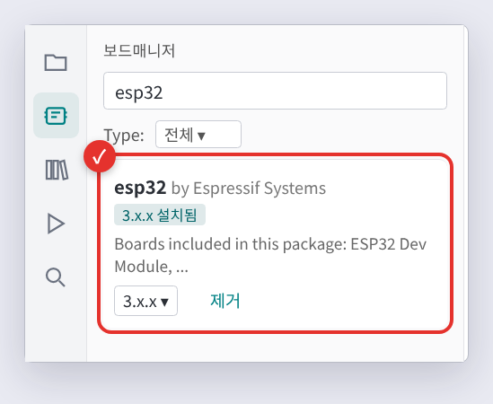
목록에 esp32가 없으면 파일 → 기본 설정 → 추가 보드 관리자 URL에
https://espressif.github.io/arduino-esp32/package_esp32_index.json 을 붙여 넣고 다시 검색해요.
6라이브러리 매니저로 LovyanGFX 설치
라이브러리 매니저에서 LovyanGFX
왼쪽 세 번째 아이콘(책) Ctrl+Shift+I → LovyanGFX 검색 → 설치
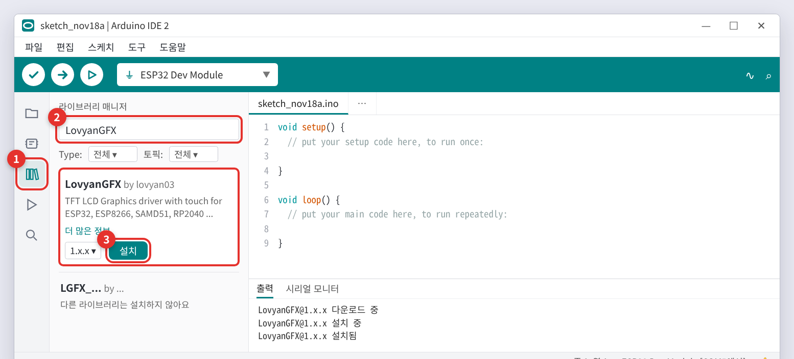
LovyanGFX by lovyan03 — 화면에 글자와 그림을 그리는 라이브러리 딱 하나만 써요. 1분이면 끝나요.
7코드 내려받고 열기
코드 내려받고 압축 풀기
사이트 7단계의 StudyPad.zip 내려받기 → 마우스 오른쪽 → 모두 압축 풀기... → StudyPad 폴더 안의 StudyPad 폴더로

7코드 내려받고 열기
StudyPad.ino 더블클릭
위쪽에 탭이 18개 보이면 성공이에요.

7코드 내려받고 열기
코드 폴더의 세 가지 약속
- 압축을 꼭 풀고 열어요 — zip 안에서 열면 저장·업로드가 안 돼요
- 폴더 이름 = .ino 이름 — 바꾸려면 둘 다 똑같이
- 새 버전은 옛 폴더를 지우고 풀어요 — 덮어쓰면 옛 파일이 남아 오류
8보드 연결 · 포트 확인
USB-C 케이블로 연결
컴퓨터는 보드를 COM5처럼 COM + 숫자(포트)로 알아봐요. 숫자는 노트북마다 달라요.
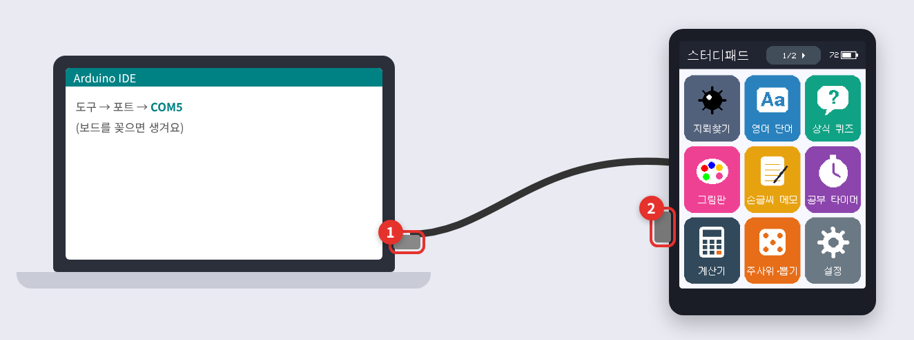
8보드 연결 · 포트 확인
내 보드의 COM 번호 찾기
- 시작 버튼 오른쪽 클릭 → 장치 관리자
- 포트(COM & LPT) 펼치기
- 케이블을 뺐다 꽂으면 사라졌다 나타나는 것이 내 보드
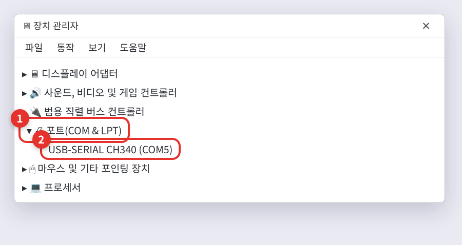
포트 칸이 없거나 노란 느낌표가 보이면 → 다른 케이블로 바꿔 봐요. 그래도 안 되면 CH340 드라이버를 선생님께 부탁해요.
9도구 메뉴 세 가지 설정
도구 메뉴에서 세 가지
IDE에게 어떤 보드에, 어떤 크기로, 어느 포트로 보낼지 알려 줘요. 하나라도 틀리면 업로드가 안 돼요.
2
Partition SchemeHuge APP9도구 메뉴 세 가지 설정
① 보드: ESP32 Dev Module
도구 → 보드 → esp32 → ESP32 Dev Module
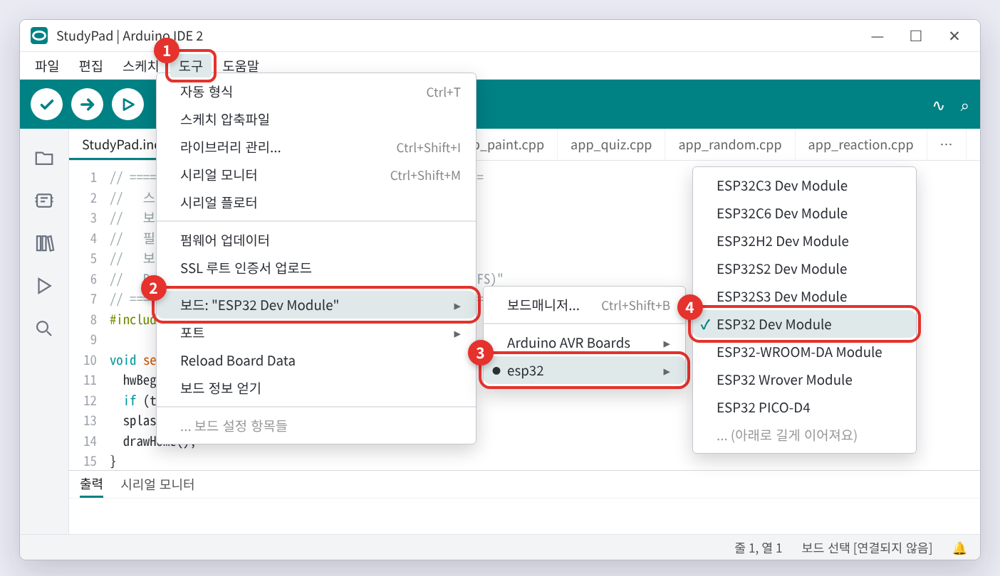
S3, C3 같은 글자가 붙지 않은 것이 맞아요. 우리 보드는 ESP32-S3가 아니에요.
9도구 메뉴 세 가지 설정
가장 많이 막히는 한 줄
Huge APP
한글 글꼴과 단어 1,664개가 들어 있어 코드가 커요.
안 바꾸면 Sketch too big 오류가 나요.
9도구 메뉴 세 가지 설정
② Partition Scheme: Huge APP
도구 → Partition Scheme → Huge APP (3MB No OTA/1MB SPIFFS)
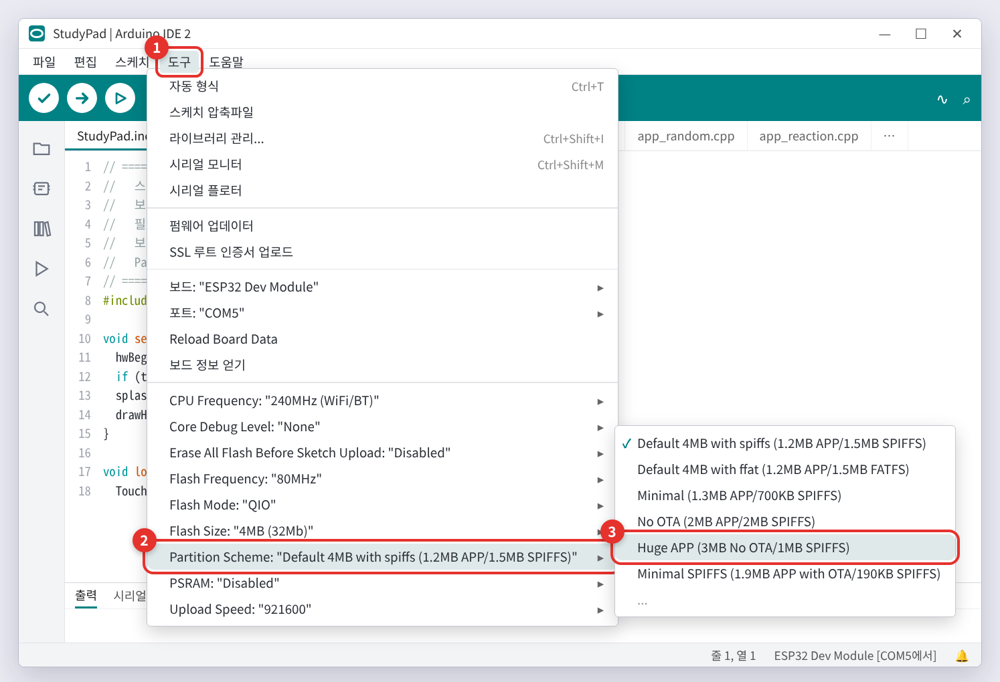
9도구 메뉴 세 가지 설정
③ 포트: 내 COM 번호
도구 → 포트 → 8단계에서 찾은 번호. 앞에 ✓가 생기면 골라진 거예요.
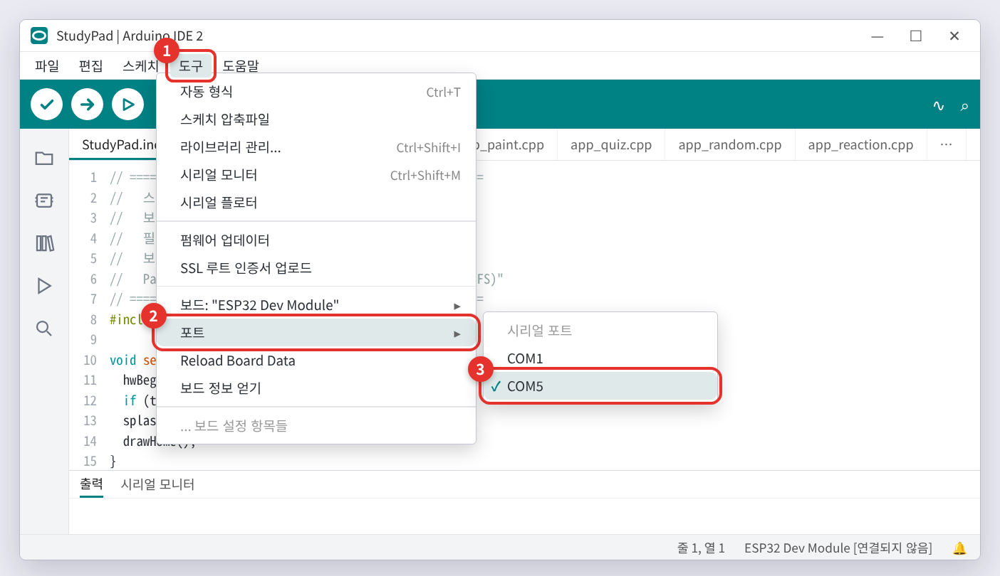
9도구 메뉴 세 가지 설정
도구 메뉴 정리 — 옆 사람과 확인
보드
ESP32 Dev Module
Partition Scheme
Huge APP (3MB No OTA/1MB SPIFFS)
포트
내 보드의 COM 번호 (예: COM5)
나머지 항목
건드리지 않아요 (처음 값 그대로)
IDE를 껐다 켜도 이 설정은 기억돼요.
10✓ 확인(컴파일)
✓ 확인 먼저 눌러 보기
왼쪽 위 ✓ Ctrl+R → 처음은 3~10분 → 컴파일 완료. 가 뜨면 성공
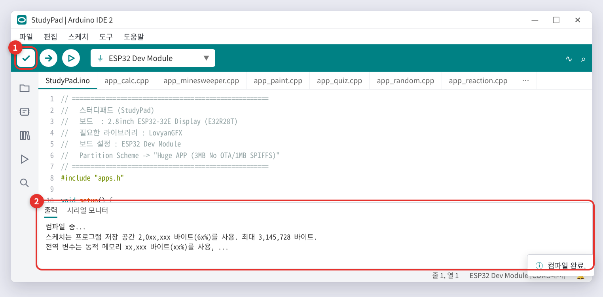
숫자는 그림과 달라도 괜찮아요. 빨간 글자가 없으면 성공이에요.
11→ 업로드
→ 업로드
왼쪽 위 → Ctrl+U → Connecting.... → Writing at ... (100 %) → 업로드 완료.
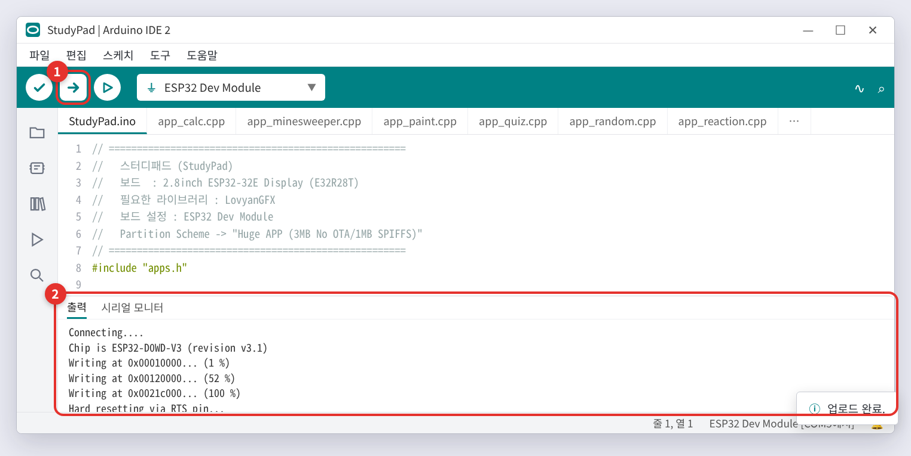
업로드 중에는 케이블을 건드리지 않아요. 끝나면 보드가 저절로 다시 켜져요.
11→ 업로드
Connecting...... 에서 점만 찍히면
1
→ 업로드 누르기출력 창에 Connecting이 나올 때까지2
BOOT 꾹 누르기보드 뒷면의 BOOT 버튼3
Writing at 나오면 떼기숫자가 올라가기 시작하면 손을 떼요그래도 안 되면 도구 → 포트 번호를 다시 확인하고, 시리얼 모니터가 열려 있으면 닫아요.
12처음 켜기 — 터치 보정
터치 보정 — 처음 한 번만
빨간 + 가운데를 펜으로 꾹 → 삑 소리가 나면 떼기 → 나머지 +도 똑같이
① 빨간 + 를 펜으로 꾹② 시작 화면③ 홈 화면 — 완성!
12처음 켜기 — 터치 보정
터치가 어긋나면 다시 보정
- 설정 앱 → 터치 보정 → 시작
- 또는 스터디패드 시작 화면이 보이는 동안 BOOT 누르기
- BOOT를 누른 채로 전원을 켜면 업로드 대기 상태 — 화면이 안 나와요
🆘안 될 때
빨간 글자가 나오면
위에서부터 처음 나온 error 줄이 가장 중요해요. 그 줄의 낱말로 다음 장 표를 찾아요.
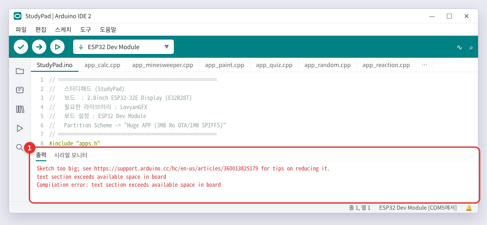
🆘안 될 때
컴파일할 때 나는 오류
Sketch too big
Partition Scheme → Huge APP 고르기 (9-②)
LovyanGFX.hpp: No such file
라이브러리 매니저에서 LovyanGFX 설치 (6단계)
'○○' was not declared
옛 폴더를 지우고 새로 압축 풀기. 그래도 같으면 폴더와 .ino 이름을 둘 다 StudyPad2로
ESP_EXT1_WAKEUP_ANY_LOW
보드를 ESP32 Dev Module로 다시 고르기 (9-①)
🆘안 될 때
연결 · 업로드 오류
포트 목록이 비어 있음
① 다른 케이블 ② 다른 USB 단자 ③ 장치 관리자 확인 (8단계)
Failed to connect / Connecting......
포트 번호 확인 → Connecting 때 BOOT 꾹 → Writing에서 떼기
A fatal error occurred
도구 → Upload Speed: 115200으로 낮춰 다시 업로드
🆘안 될 때
올린 뒤에 이상할 때
화면이 하얗거나 그대로
RESET 버튼 한 번. 그래도면 보드 이름(E32R28T) 확인
색이 반대로 보여요
설정 → 색 반전. 빨강·파랑이 바뀌면 hw.h의 LCD_RGB_ORDER를 true로
누른 곳과 다른 곳이 눌려요
터치 보정 다시 — 펜으로 + 정가운데 (12단계)
소리가 안 나요
스피커 단자 연결, 설정 → 소리 크기 확인
화면이 꺼졌어요
고장 아님, 자동 절전. 화면이나 BOOT를 누르면 깨어나요
"배터리가 부족해요"
기록은 저장돼 있어요. 충전한 뒤 BOOT
·마무리
다음 시간부터는
7 → 9 → 11
코드 열기 → 도구 설정 확인 → 업로드만 하면 돼요.
보드 매니저·라이브러리 설치는 다시 안 해요.